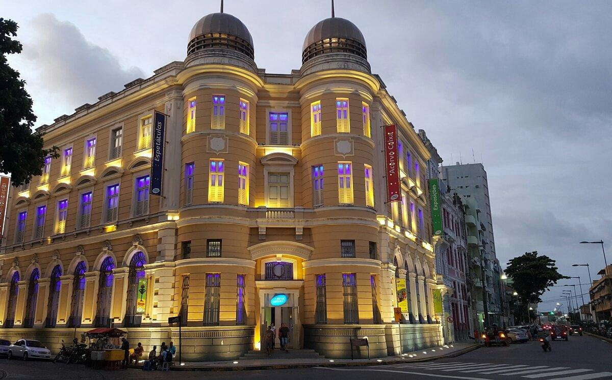

História da Praça Marco Zero
O Marco Zero no Recife Antigo é o lugar de referência
onde a cidade nasceu e todas as medidas
oficiais de
distâncias rodoviárias usam como ponto de partida.
Seu nome é, na verdade, Praça Rio
Branco e fica ao
lado do Porto de Pernambuco.
Pode-se dizer que ele se situa no centro histórico da
cidade, que é mais conhecido como Recife
Antigo por
ser a parte onde se iniciou o povoamento da capital
pernambucana.
A popularização do nome Marco Zero aconteceu desde 1938,
devido à instalação do símbolo
geográfico na parte central
da praça. Ele foi uma doação do Automóvel
Clube de Pernambuco.
Além disso, há nela uma estátua de bronze de 2,80 metros,
de autoria do escultor francês Félix
Charpentier.
Outros dois pontos turísticos próximos à Praça do Marco Zero
Caixa Cultural Recife

A Caixa Cultural Recife é um espaço cultural localizado
na cidade do Recife,
capital do estado de Pernambuco,
Brasil. Integra um conjunto de sete centros culturais
criados pela
Caixa Econômica Federal em capitais
brasileiras.
Museu Cais do Sertão

O Museu Cais do Sertão é um museu interativo sobre o
Sertão e Luiz Gonzaga localizado na cidade do Recife,
capital de Pernambuco, Brasil. Foi eleito um dos
vinte melhores museus da América do Sul em 2015
pelos usuários do site de viagens TripAdvisor.
Voltar para a página principal